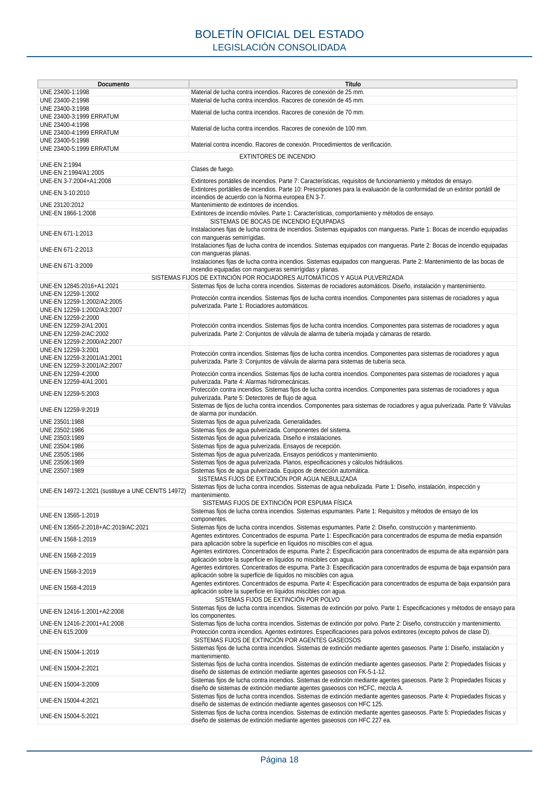

RSCIEI · «Relación de normas UNE y otras reconocidas internacionalmente · versión 2025-04-10 · capa asociada
Formatos: JSON compacto · Markdown · PDF fuente
Ámbito del documento · texto del ámbito · documento y tablas
ID técnico a0042 · PDF pág. 17-20 · jerarquía no validada por persona · contrastado con el literal de la página 17 (candidato tipográfico); no validado por persona · padre: raíz
«Relación de normas UNE y otras reconocidas internacionalmente Documento Título GENERAL UNE 157001:2014 Criterios generales para la elaboración formal de los documentos que constituyen un proyecto técnico. UNE 192005-2:2021 Procedimiento para la inspección reglamentaria. Seguridad contra incendios. Parte 2: Instalaciones de protección contra incendios. SISTEMAS DE DETECCIÓN Y DE ALARMA DE INCENDIOS UNE-EN 54-1:2011 Sistemas de detección y de alarma de incendio. Parte 1: Introducción. EN 54-2:1997, adoptada como UNE 23007-2:1998. EN 54-2:1997/A1:2006, adoptada como UNE 23007-2:1998/1M:2008. EN 54-2:1997/AC:1999, adoptada como UNE 23007-2:1998/erratum:2004. Sistemas de detección y de alarma de incendios. Parte 2: Equipos de control e indicación. UNE-EN 54-3:2001 UNE-EN 54-3/A1:2002 UNE-EN 54-3:2001/A2:2007 Sistemas de detección y alarma de incendios. Parte 3: Dispositivos de alarma de incendios. Dispositivos acústicos. EN 54-4:1997, adoptada como UNE 23007-4:1998. EN 54-4/AC:1999, adoptada como UNE 23007-4:1998/ erratum:1999. EN 54-4/A1:2003, adoptada como UNE 23007-4:1998/1M:2003. EN 54-4:1997/A2:2007, adoptada como UNE 23007-4:1998/2M:2007. Sistemas de detección y alarma de incendios.Parte 4: Equipos de suministro de alimentación. UNE-EN 54-5:2017+A1:2019 Sistemas de detección y alarma de incendios. Parte 5: Detectores de calor. Detectores puntuales. UNE-EN 54-7:2019 Sistemas de detección y alarma de incendios. Parte 7: Detectores de humo: Detectores puntuales que funcionan según el principio de luz difusa, luz transmitida o por ionización. UNE-EN 54-10:2002 UNE-EN 54-10:2002/A1:2007 Sistemas de detección y alarma de incendios. Parte 10: Detectores de llama. Detectores puntuales. UNE-EN 54-11:2001 UNE-EN 54-11:2001/A1:2007 Sistemas de detección y alarma de incendios. Parte 11: Pulsadores manuales de alarma. UNE-EN 54-12:2019 Sistemas de detección y alarma de incendios. Parte 12: Detectores de humo. Detectores de línea que utilizan un haz óptico de luz. UNE-EN 54-13:2019+A1:2021 Sistemas de detección y alarma de incendios. Parte 13: Evaluación de la compatibilidad de los componentes de un sistema. UNE 23007-14:2014 Sistemas de detección y de alarma de incendios. Parte 14: Planificación, diseño, instalación, puesta en servicio, uso y mantenimiento. UNE-EN 54-16:2010 Sistemas de detección y alarma de incendios. Parte 16: Control de la alarma por voz y equipos indicadores. UNE-EN 54-17:2007 Sistemas de detección y alarma de incendios. Parte 17: Aisladores de cortocircuito. UNE-EN 54-18:2007 Sistemas de detección y alarma de incendios. Parte 18: Dispositivos de entrada/salida. UNE-EN 54-20:2007 UNE-EN 54-20:2007/AC:2009 Sistemas de detección y alarma de incendios. Parte 20: Detectores de aspiración de humos. UNE-EN 54-21:2007 Sistemas de detección y alarma de incendios. Parte 21: Equipos de transmisión de alarmas y avisos de fallo. UNE-EN 54-23:2011 Sistemas de detección y alarma de incendios. Parte 23: Dispositivos de alarma de incendios. Dispositivos de alarma visual (VAD). UNE-EN 54-24:2009 Sistemas de detección y alarma de incendios. Parte 24: Componentes de los sistemas de alarma por voz. Altavoces. UNE-EN 54-25:2009 UNE-EN 54-25:2009/AC:2012 Sistemas de detección y alarma de incendios. Parte 25: Componentes que utilizan enlaces radioeléctricos. UNE-EN 14604:2006 UNE-EN 14604:2006/AC:2009 Alarmas de humo autónomas. UNE 23007-32:2020 (ver notas) Sistemas de detección y alarma de incendios – Parte 32: Planificación, diseño, instalación, puesta en marcha, uso y mantenimiento de sistemas de alarma por voz. Notas relativas a la aplicación de la norma UNE 23007-32:2020: Nota 1: Respecto a las distancias de los altavoces a instalar cuando se usa el método prescriptivo (apartado 6.5.3), estas podrán ser superiores a las que se establecen como recomendación en dicho apartado siempre que se verifique que con el número de dispositivos instalados se alcanza el nivel y calidad necesarios de sonido. Nota 2: Como alternativa a la norma UNE 23007-32, también se admite el uso de la norma UNE-EN 60849:2002, Sistemas electroacústicos para servicios de emergencia. SISTEMAS DE ABASTECIMIENTO DE AGUA CONTRA INCENDIOS UNE 23500:2021 (ver nota) Sistemas de abastecimiento de agua contra incendios. Nota: Para la aplicación de la norma UNE 23500:2021 se tomarán las siguientes consideraciones: 1. Cuando la categoría del abastecimiento requerida sea I, se aceptan las combinaciones de fuentes de agua y sistemas de impulsión de las figuras 11, 13, 15, 16 y 17 de las tablas 4A y 4B del apartado 5.3 de Clases de abastecimiento, siempre que la instalación no requiera un abastecimiento doble conforme a otra reglamentación en vigor y no se den cualquiera de las siguientes condiciones: a) La longitud medida en línea recta desde el punto de abastecimiento y el sistema más alejado del mismo supera los 2.000 m. b) La superficie total protegida con rociadores automáticos supera 250.000 m2. 2. En cuanto a las combinaciones de fuentes de agua y sistemas de impulsión y categorías resultantes de tablas 4A y 4B del apartado 5.3 de Clases de abastecimiento, la red de uso público tipo 1 se podrá considerar clase de abastecimiento superior y se podrá usar para abastecimientos de categoría II. 3. Las referencias a «Hidrantes» contenidas en la norma UNE 23500, para aquellos cuyo único uso previsto sea el llenado de camiones (aquellos no previstos para impulsión directa), se considerarán de categoría III y, por tanto, bastará la clase de abastecimiento de tipo «SENCILLO» (tablas 3, 4A y 4B de la citada norma). SISTEMAS DE HIDRANTES CONTRA INCENDIOS UNE-EN 14384:2006 Hidrantes de columna. UNE-EN 14339:2006 Hidrantes contra incendios bajo tierra. MANGUERAS UNE 23091-1:1989 Mangueras de impulsión para la lucha contra incendios. Parte 1: Generalidades. UNE 23091-2A:1996 Mangueras de impulsión para la lucha contra incendios. Parte 2A: Manguera flexible plana para servicio ligero, de diámetros 45 mm y 70 mm. UNE 23091-2B:1981 Mangueras de impulsión para la lucha contra incendios. Parte 2B: Manguera flexible plana para servicio duro, de diámetros 25, 45, 70 y 100 mm. UNE 23091-4:1990. UNE 23091-4/1M:1994 UNE 23091-4/2M:1996 Mangueras de impulsión para la lucha contra incendios. Parte 4: Descripción de procesos y aparatos para pruebas y ensayos. RACORES BOLETÍN OFICIAL DEL ESTADO LEGISLACIÓN CONSOLIDADA Página 17 Documento Título UNE 23400-1:1998 Material de lucha contra incendios. Racores de conexión de 25 mm. UNE 23400-2:1998 Material de lucha contra incendios. Racores de conexión de 45 mm. UNE 23400-3:1998 UNE 23400-3:1999 ERRATUM Material de lucha contra incendios. Racores de conexión de 70 mm. UNE 23400-4:1998 UNE 23400-4:1999 ERRATUM Material de lucha contra incendios. Racores de conexión de 100 mm. UNE 23400-5:1998 UNE 23400-5:1999 ERRATUM Material contra incendio. Racores de conexión. Procedimientos de verificación. EXTINTORES DE INCENDIO UNE-EN 2:1994 UNE-EN 2:1994/A1:2005 Clases de fuego. UNE-EN 3-7:2004+A1:2008 Extintores portátiles de incendios. Parte 7: Características, requisitos de funcionamiento y métodos de ensayo. UNE-EN 3-10:2010 Extintores portátiles de incendios. Parte 10: Prescripciones para la evaluación de la conformidad de un extintor portátil de incendios de acuerdo con la Norma europea EN 3-7. UNE 23120:2012 Mantenimiento de extintores de incendios. UNE-EN 1866-1:2008 Extintores de incendio móviles. Parte 1: Características, comportamiento y métodos de ensayo. SISTEMAS DE BOCAS DE INCENDIO EQUIPADAS UNE-EN 671-1:2013 Instalaciones fijas de lucha contra de incendios. Sistemas equipados con mangueras. Parte 1: Bocas de incendio equipadas con mangueras semirrígidas. UNE-EN 671-2:2013 Instalaciones fijas de lucha contra de incendios. Sistemas equipados con mangueras. Parte 2: Bocas de incendio equipadas con mangueras planas. UNE-EN 671-3:2009 Instalaciones fijas de lucha contra incendios. Sistemas equipados con mangueras. Parte 2: Mantenimiento de las bocas de incendio equipadas con mangueras semirrígidas y planas. SISTEMAS FIJOS DE EXTINCIÓN POR ROCIADORES AUTOMÁTICOS Y AGUA PULVERIZADA UNE-EN 12845:2016+A1:2021 Sistemas fijos de lucha contra incendios. Sistemas de rociadores automáticos. Diseño, instalación y mantenimiento. UNE-EN 12259-1:2002 UNE-EN 12259-1:2002/A2:2005 UNE-EN 12259-1:2002/A3:2007 Protección contra incendios. Sistemas fijos de lucha contra incendios. Componentes para sistemas de rociadores y agua pulverizada. Parte 1: Rociadores automáticos. UNE-EN 12259-2:2000 UNE-EN 12259-2/A1:2001 UNE-EN 12259-2/AC:2002 UNE-EN 12259-2:2000/A2:2007 Protección contra incendios. Sistemas fijos de lucha contra incendios. Componentes para sistemas de rociadores y agua pulverizada. Parte 2: Conjuntos de válvula de alarma de tubería mojada y cámaras de retardo. UNE-EN 12259-3:2001 UNE-EN 12259-3:2001/A1:2001 UNE-EN 12259-3:2001/A2:2007 Protección contra incendios. Sistemas fijos de lucha contra incendios. Componentes para sistemas de rociadores y agua pulverizada. Parte 3: Conjuntos de válvula de alarma para sistemas de tubería seca. UNE-EN 12259-4:2000 UNE-EN 12259-4/A1:2001 Protección contra incendios. Sistemas fijos de lucha contra incendios. Componentes para sistemas de rociadores y agua pulverizada. Parte 4: Alarmas hidromecánicas. UNE-EN 12259-5:2003 Protección contra incendios. Sistemas fijos de lucha contra incendios. Componentes para sistemas de rociadores y agua pulverizada. Parte 5: Detectores de flujo de agua. UNE-EN 12259-9:2019 Sistemas de fijos de lucha contra incendios. Componentes para sistemas de rociadores y agua pulverizada. Parte 9: Válvulas de alarma por inundación. UNE 23501:1988 Sistemas fijos de agua pulverizada. Generalidades. UNE 23502:1986 Sistemas fijos de agua pulverizada. Componentes del sistema. UNE 23503:1989 Sistemas fijos de agua pulverizada. Diseño e instalaciones. UNE 23504:1986 Sistemas fijos de agua pulverizada. Ensayos de recepción. UNE 23505:1986 Sistemas fijos de agua pulverizada. Ensayos periódicos y mantenimiento. UNE 23506:1989 Sistemas fijos de agua pulverizada. Planos, especificaciones y cálculos hidráulicos. UNE 23507:1989 Sistemas fijos de agua pulverizada. Equipos de detección automática. SISTEMAS FIJOS DE EXTINCIÓN POR AGUA NEBULIZADA UNE-EN 14972-1:2021 (sustituye a UNE CEN/TS 14972) Sistemas fijos de lucha contra incendios. Sistemas de agua nebulizada. Parte 1: Diseño, instalación, inspección y mantenimiento. SISTEMAS FIJOS DE EXTINCIÓN POR ESPUMA FÍSICA UNE-EN 13565-1:2019 Sistemas fijos de lucha contra incendios. Sistemas espumantes. Parte 1: Requisitos y métodos de ensayo de los componentes. UNE-EN 13565-2:2018+AC:2019/AC:2021 Sistemas fijos de lucha contra incendios. Sistemas espumantes. Parte 2: Diseño, construcción y mantenimiento. UNE-EN 1568-1:2019 Agentes extintores. Concentrados de espuma. Parte 1: Especificación para concentrados de espuma de media expansión para aplicación sobre la superficie en líquidos no miscibles con el agua. UNE-EN 1568-2:2019 Agentes extintores. Concentrados de espuma. Parte 2: Especificación para concentrados de espuma de alta expansión para aplicación sobre la superficie en líquidos no miscibles con agua. UNE-EN 1568-3:2019 Agentes extintores. Concentrados de espuma. Parte 3: Especificación para concentrados de espuma de baja expansión para aplicación sobre la superficie de líquidos no miscibles con agua. UNE-EN 1568-4:2019 Agentes extintores. Concentrados de espuma. Parte 4: Especificación para concentrados de espuma de baja expansión para aplicación sobre la superficie en líquidos miscibles con agua. SISTEMAS FIJOS DE EXTINCIÓN POR POLVO UNE-EN 12416-1:2001+A2:2008 Sistemas fijos de lucha contra incendios. Sistemas de extinción por polvo. Parte 1: Especificaciones y métodos de ensayo para los componentes. UNE-EN 12416-2:2001+A1:2008 Sistemas fijos de lucha contra incendios. Sistemas de extinción por polvo. Parte 2: Diseño, construcción y mantenimiento. UNE-EN 615:2009 Protección contra incendios. Agentes extintores. Especificaciones para polvos extintores (excepto polvos de clase D). SISTEMAS FIJOS DE EXTINCIÓN POR AGENTES GASEOSOS UNE-EN 15004-1:2019 Sistemas fijos de lucha contra incendios. Sistemas de extinción mediante agentes gaseosos. Parte 1: Diseño, instalación y mantenimiento. UNE-EN 15004-2:2021 Sistemas fijos de lucha contra incendios. Sistemas de extinción mediante agentes gaseosos. Parte 2: Propiedades físicas y diseño de sistemas de extinción mediante agentes gaseosos con FK-5-1-12. UNE-EN 15004-3:2009 Sistemas fijos de lucha contra incendios. Sistemas de extinción mediante agentes gaseosos. Parte 3: Propiedades físicas y diseño de sistemas de extinción mediante agentes gaseosos con HCFC, mezcla A. UNE-EN 15004-4:2021 Sistemas fijos de lucha contra incendios. Sistemas de extinción mediante agentes gaseosos. Parte 4: Propiedades físicas y diseño de sistemas de extinción mediante agentes gaseosos con HFC 125. UNE-EN 15004-5:2021 Sistemas fijos de lucha contra incendios. Sistemas de extinción mediante agentes gaseosos. Parte 5: Propiedades físicas y diseño de sistemas de extinción mediante agentes gaseosos con HFC 227 ea. BOLETÍN OFICIAL DEL ESTADO LEGISLACIÓN CONSOLIDADA Página 18 Documento Título UNE-EN 15004-6:2021 Sistemas fijos de lucha contra incendios. Sistemas de extinción mediante agentes gaseosos. Parte 6: Propiedades físicas y diseño de sistemas de extinción mediante agentes gaseosos con HFC 23. UNE-EN 15004-7:2018 Sistemas fijos de lucha contra incendios. Sistemas de extinción mediante agentes gaseosos. Parte 7: Propiedades físicas y diseño de sistemas de extinción mediante agentes gaseosos con IG-01. UNE-EN 15004-8:2018 Sistemas fijos de lucha contra incendios. Sistemas de extinción mediante agentes gaseosos. Parte 8: Propiedades físicas y diseño de sistemas de extinción mediante agentes gaseosos con IG-100. UNE-EN 15004-9:2018 Sistemas fijos de lucha contra incendios. Sistemas de extinción mediante agentes gaseosos. Parte 9: Propiedades físicas y diseño de sistemas de extinción mediante agentes gaseosos con IG-55. UNE-EN 15004-10:2018 Sistemas fijos de lucha contra incendios. Sistemas de extinción mediante agentes gaseosos. Parte 10: Propiedades físicas y diseño de sistemas de extinción mediante agentes gaseosos con IG-541. UNE-ISO 6183:2015 Equipos de protección contra incendios. Sistemas de extinción con dióxido de carbono para uso en edificios. Diseño e instalación. UNE-EN 12094-1:2004 Sistemas fijos de lucha contra incendios — Componentes para sistemas de extinción mediante agentes gaseosos — Parte 1: Requisitos y métodos de ensayo para los dispositivos automáticos y eléctricos de control y retardo. UNE-EN 12094-2:2004 Sistemas fijos de lucha contra incendios. Componentes para sistemas de extinción mediante agentes gaseosos. Parte 2: Requisitos y métodos de ensayo para los dispositivos automáticos no eléctricos de control y de retardo. UNE-EN 12094-3:2003 Sistemas fijos de lucha contra incendios. Componentes para sistemas de extinción mediante agentes gaseosos. Parte 3: Requisitos y métodos de ensayo para los dispositivos manuales de disparo y de paro. UNE-EN 12094-4:2005 Sistemas fijos de lucha contra incendios. Componentes para sistemas de extinción mediante agentes gaseosos. Parte 4: Requisitos y métodos de ensayo para depósitos y sus actuadores. UNE-EN 12094-5:2007 Sistemas fijos de lucha contra incendios — Componentes para sistemas de extinción mediante agentes gaseosos — Parte 5: Requisitos y métodos de ensayo para válvulas direccionales alta y baja presión y sus actuadores. UNE-EN 12094-6:2007 Sistemas fijos de lucha contra incendios — Componentes para sistemas de extinción mediante agentes gaseosos — Parte 6: Requisitos y métodos de ensayo para los dispositivos de desactivación no eléctricos. UNE-EN 12094-7:2001 UNE-EN 12094-7/A1:2005 Sistemas fijos de extinción de incendios — Componentes para sistemas de extinción mediante agentes gaseosos — Parte 7: Requisitos y métodos de ensayo para difusores para sistemas de CO2. UNE-EN 12094-8:2007 Sistemas fijos de lucha contra incendios. Componentes para sistemas de extinción mediante agentes gaseosos. Parte 8: Requisitos y métodos de ensayo para conectores. UNE-EN 12094-9:2003 Sistemas fijos de lucha contra incendios — Componentes para sistemas de extinción mediante agentes gaseosos — Parte 9: Requisitos y métodos de ensayo para detectores especiales de incendios. UNE-EN 12094-10:2004 Sistemas fijos de lucha contra incendios. Componentes para sistemas de extinción mediante agentes gaseosos. Parte 10: Requisitos y métodos de ensayo para presostatos y manómetros. UNE-EN 12094-11:2003 Sistemas fijos de lucha contra incendios — Componentes para sistemas de extinción mediante agentes gaseosos — Parte 11: Requisitos y métodos de ensayo para dispositivos mecánicos de pesaje. UNE-EN 12094-12:2004 Sistemas fijos de extinción de incendios — Componentes para sistemas de extinción mediante agentes gaseosos — Parte 12: Requisitos y métodos de ensayo para dispositivos neumáticos de alarma. UNE-EN 12094-13:2001 UNE-EN 12094-13/AC:2002 Sistemas fijos de lucha contra incendios — Componentes para sistemas de extinción mediante agentes gaseosos — Parte13: Requisitos y métodos de ensayo para válvulas de retención y válvulas anti-retorno. SISTEMAS FIJOS DE EXTINCIÓN POR AEROSOLES CONDENSADOS UNE-EN 15276-1:2022 Sistemas fijos de lucha contra incendios. Sistemas de extinción por aerosoles condensados. Parte 1: Requisitos y métodos de ensayo para los componentes. UNE-EN 15276-2:2022 Sistemas fijos de lucha contra incendios. Sistemas de extinción por aerosoles condensados. Parte 2: Diseño, instalación y mantenimiento. SISTEMAS PARA EL CONTROL DE HUMOS Y DE CALOR UNE 23584:2008 Seguridad contra incendios. Sistemas de control de temperatura y evacuación de humos (SCTEH). Requisitos para la instalación, puesta en marcha y mantenimiento periódico de los SCTEH. UNE 23585:2017 Seguridad contra incendios. Sistemas de control de humo y calor. Requisitos y métodos de cálculo y diseño para proyectar un sistema de control de temperatura y de evacuación de humos (SCTEH) en caso de incendio estacionario. UNE-EN 12101-1:2007 UNE-EN 12101-1:2007/A1:2007 Sistemas para el control de humo y de calor. Parte 1: Especificaciones para barreras para control de humo. UNE-EN 12101-2:2004 Sistemas para el control de humos y de calor. Parte 2: Especificaciones para aireadores de extracción natural de humos y calor. UNE-EN 12101-3:2016 Sistemas de control de humos y calor. Parte 3: Especificaciones para aireadores extractores de humos y calor mecánicos. UNE-EN 12101-6:2006 Sistemas para el control de humo y de calor. Parte 6: Especificaciones para los sistemas de diferencial de presión. Equipos. UNE-EN 12101-7:2013 Sistemas para el control de humo y de calor. Parte 7: Secciones de conducto de humo. UNE-EN 12101-8:2015 Sistemas para el control de humo y de calor. Parte 8: Compuertas para el control de humo. UNE-EN 12101-10:2007 Sistemas para el control de humo y de calor. Parte 10: Equipos de alimentación de energía. MANTAS IGNÍFUGAS UNE-EN 1869:2021 Mantas ignífugas. SISTEMAS FIJOS DE EXTINCIÓN EN COCINAS COMERCIALES UNE-EN 17446:2022 Sistemas de extinción de incendios en cocinas comerciales. Requisitos de diseño, documentación y ensayo. SISTEMAS DE SEÑALIZACIÓN LUMINISCENTE UNE-EN ISO 7010:2020 Símbolos gráficos. Colores y señales de seguridad. Señales de seguridad registradas. UNE 23032:2015 Seguridad contra incendios. Símbolos gráficos para su utilización en los planos de proyecto, planes de autoprotección y planos de evacuación. UNE 23033-1:2019 Seguridad contra incendios. Señalización de seguridad. Parte 1: Señales y balizamiento de los sistemas y equipos de protección contra incendios. UNE 23035-2:2003 Seguridad contra incendios. Señalización fotoluminiscente. Parte 2: Medida de productos en el lugar de utilización. UNE 23035-4:2003 Seguridad contra incendios. Señalización fotoluminiscente. Parte 4: Condiciones generales. Mediciones y clasificación. ACTAS DE MANTENIMIENTO UNE 23580-1:2022 Seguridad contra incendios. Actas de mantenimiento de las instalaciones y equipos de protección contra incendios. Parte 1: Generalidades. UNE 23580-2:2022 Seguridad contra incendios. Actas de mantenimiento de las instalaciones y equipos de protección contra incendios. Parte 2: Sistemas de detección y alarma de incendios. UNE 23580-3:2022 Seguridad contra incendios. Actas de mantenimiento de las instalaciones y equipos de protección contra incendios. Parte 3: Abastecimiento de agua. UNE 23580-4:2022 Seguridad contra incendios. Actas de mantenimiento de las instalaciones y equipos de protección contra incendios. Parte 4: Red general: hidrantes y válvulas. UNE 23580-5:2022 Seguridad contra incendios. Actas de mantenimiento de las instalaciones y equipos de protección contra incendios. Parte 5: Red de bocas de incendio equipadas. BOLETÍN OFICIAL DEL ESTADO LEGISLACIÓN CONSOLIDADA Página 19 Documento Título UNE 23580-6:2022 Seguridad contra incendios. Actas de mantenimiento de las instalaciones y equipos de protección contra incendios. Parte 6: Sistemas de rociadores. UNE 23580-7:2005 Seguridad contra incendios. Actas para la revisión de las instalaciones y equipos de protección contra incendios. Inspección técnica para mantenimiento. Parte 7: Sistemas de espuma. UNE 23580-8:2005 Seguridad contra incendios. Actas para la revisión de las instalaciones y equipos de protección contra incendios. Inspección técnica para mantenimiento. Parte 8: Sistemas de gases. UNE 23580-9:2022 Seguridad contra incendios. Actas de mantenimiento de las instalaciones y equipos de protección contra incendios. Parte 9: Extintores. UNE 23580-10:2022 Seguridad contra incendios. Actas de mantenimiento de las instalaciones y equipos de protección contra incendios. Parte 10: Sistemas de columna seca. UNE 23580-11:2022 Seguridad contra incendios. Actas de mantenimiento de las instalaciones y equipos de protección contra incendios. Parte 11: Sistemas de agua nebulizada. UNE 23580-12:2023 Seguridad contra incendios. Actas de mantenimiento de las instalaciones y equipos de protección contra incendios. Parte 12: Sistemas de extinción por polvo. UNE 23580-13:2023 Seguridad contra incendios. Actas de mantenimiento de las instalaciones y equipos de protección contra incendios. Parte 13: Aerosoles condensados. UNE 23580-14:2022 Seguridad contra incendios. Actas de mantenimiento de las instalaciones y equipos de protección contra incendios. Parte 14: Sistemas de control de temperatura y evacuación de humos. UNE 23580-15:2022 Seguridad contra incendios. Actas de mantenimiento de las instalaciones y equipos de protección contra incendios. Parte 15: Señalización. UNE 23580-16:2023 Actas para la revisión de las instalaciones y equipos de protección contra incendios. Inspección técnica para mantenimiento. Parte 16: Sistemas de Agua pulverizada.



PDF fuente redistribuible: copia fiel enlazada en esta página (SHA256 verificado).